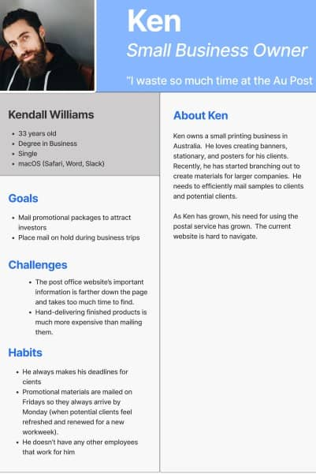
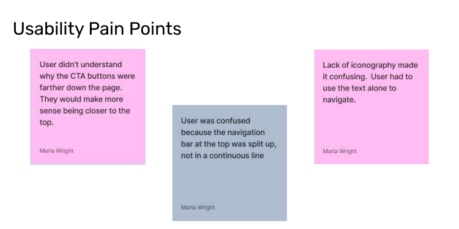
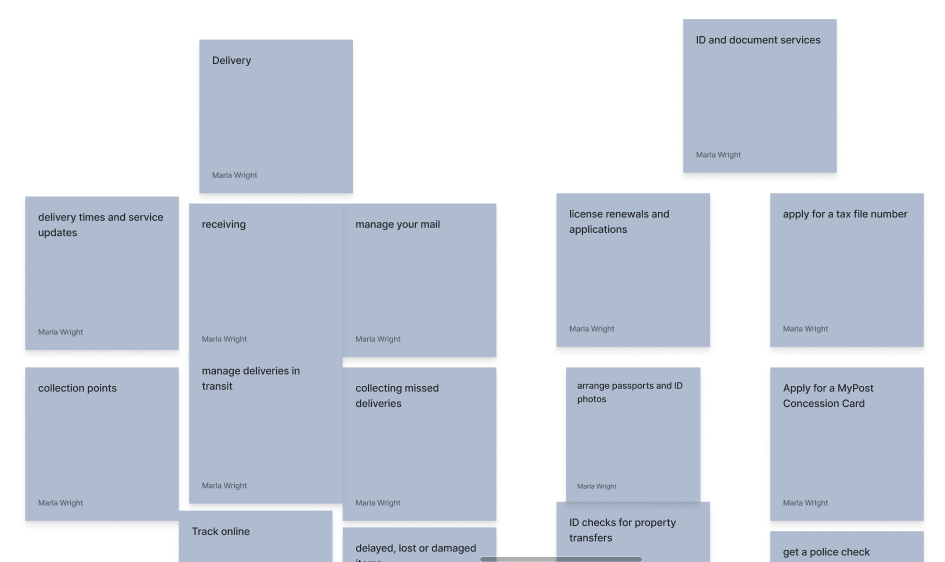
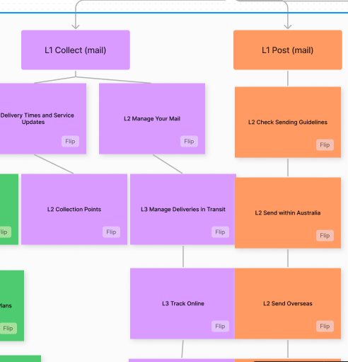
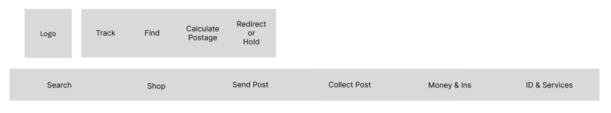
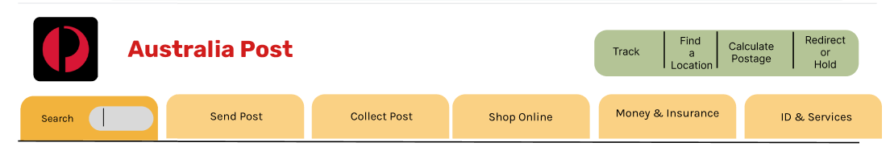
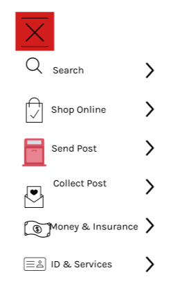
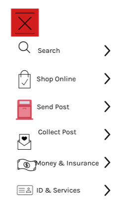
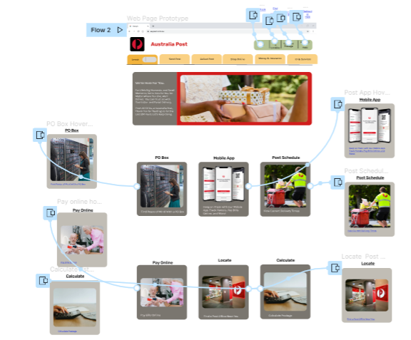
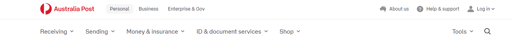

.png)
Empathize

- Government websites are notorious for having poor user design
- Causing user frustration navigating the site
Proto-Persona

- Ken owns a small printing business in Australia, where he resides
- As Ken's business has grown, his need for using the postal service has grown
- The current website feels convoluted and hard to navigate
- Note: I plan to continue researching what users actually use the post office for and where their pain points lie.
Usability Testing
Goal: To better understand where users struggle using the Australia Post Office website, which parts aren't functional, and where the site can be improved.
Heuristic Evaluation & Accessibility

- The biggest issue was its accessibility and performance
- On The Lighthouse report, the homepage scored 50% in performance
- From my own research using the 6 main colors, the homepage had a 60% failure rate for color contrast accessibility. See color audit .
Define
Card Sort

Fig. 5 - Navigation Card Sort
- Users were frustrated that there were multiple ways to carry out an action within the megamenu.
- I sorted all of the L1, and L2 options, deleted duplicates, and tried to group items more intuitively.
- (In hindsight, it would have been more beneficial to engage users at this point of the research.)
Updated Site Map

Fig. 6 - Revised Site Map
To improve navigation, I nested many items farther than L2, deleted the 'Tools' section and converted it into a CTA bar that was visible above the fold.
Ideate



.png) 
My efforts were concentrated on the main navigation for desktop and mobile views. It went through multiple iterations before I was happy with the design. It was important for it to be responsive.
Prototype

Fig. 12 - Hi-Fidelity Final Prototype
- The original homepage felt very text heavy and I wanted to make it feel more intuitive.
- I got rid of the horizontal cards and created a simple grid of cards.
Test

It made the most sense to conduct A/B testing against the original desktop navigation bar and my redesigned desktop navigation bar.
- Due to time constraints, only two A/B tests were completed.
- 50% of users utilized the "Tools" sections in the original navigation and 50% did not.
- Some key insights were to continue iterating on the L1 titles as well as the CTA bar copy.
- You can see my A/B Testing plan here.
Empathize
- Using Facebook poll, I asked friends what they used the Post Office website for the most. One answer I was not expecting was to "look up postal codes" and added that to the main CTA bar.
- From another card sort (hybrid) I combined "Send Post" and "Collect Post" into "Manage your Mail."
- Based on the results of the card sort I also nested more items farther than L2.
- Finally, I conducted an informal competitor analysis and updated the UI and color palette to be more on trend.
- Stay tuned for more Testing